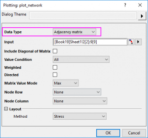

Netzwerkdiagramm
Network-Plot
Datenanforderungen
Origin unterstützt drei Eingabedatentypen, um ein Netzwerkdiagramm zu zeichnen.
- Adjazenzmatrix
- Eine Adjazenzmatrix ist ist eine quadratische Matrix, die verwendet wird, um ein finites Diagramm darzustellen. Die Elemente der Matrix weisen darauf hin, ob die Vertixpaare adjazent oder nicht im Diagramm sind.
- Inzidenzmatrix
- Eine Inzidenzmatrix ist eine logische Matrix, die die Beziehung zwischen zwei Klassenobjekten zeigt und üblicherweise als Inzidenzbeziehung bezeichnet wird.
- Randliste
- Eine Randliste ist eine Datenstruktur, die verwendet wird, um ein Diagramm als eine Liste seiner Ränder darzustellen. Verwenden Sie diese Anordnung zum Zeichnen auf Karten.
Diagramm erstellen
Markieren Sie die Quelldaten und öffnen Sie den Dialog plot_network durch eine der folgenden Methoden:
- Wählen Sie Zeichnen > Kategorial: Netzwerk im Hauptmenü.
Der Dialog plotnetwork
|
Eingabedaten = Adjazenzmatrix
|
Eingabedaten = Inzidenzmatrix
|
Eingabedaten = Randliste
|
|
|
|
|  |
|
|
Diagonale der Matrix einschließen
Legen Sie fest, ob das Selbstfeedback (Verbindungsinformationen), das in der Diagonalen der Matrix gespeichert wird, eingeschlossen wird. Diese Option ist nur für Eingabedaten = Adjazenzmatrix verfügbar.
Wertbedingung
Dieses Bedienelement kann verwendet werden, um einen Filter für die Matrixwerte zu setzen und die Verbindungen zwischen den Knoten zu zeichnen. Nur die Werte, die mit der Bedingung übereinstimmen, werden als Verbindungen gezeichnet.
Für Zwischen und Nicht zwischen werden de Bearbeitungsfelder Min und Max gezeigt; für die anderen außer Alle wird das Bearbeitungsfeld Wert gezeigt.
Wenn Sie für die obige Adjazenzmatrix Diagonale der Matrix einschließen ausgewählt haben, setzen Sie Wertbedingung auf Kleiner als = 2. Der Wert größer als oder gleich 2 sollte gefiltert werden.
Gewichtet
Legen Sie fest, ob eine Gewichtung zu den Verbindungen zwischen den Knoten hinzugefügt werden soll. Wenn Sie dieses Kontrollkästchen aktiviert haben, wird mit den Werte für die Verbindungen eine Distanzmatrix berechnet, die zum Definieren der XY-Position der Knoten genutzt wird.
Gerichtet
Legen Sie fest, ob mit einem Pfeil die Richtung von jeder Verbindung gezeigt wird.
Wenn Sie diese Option auswählen, können Sie die Richtung entscheiden: Von Zeile zu Spalte oder Von Spalte zu Zeile.
Matrixwertmodus
Legen Sie fest, wie der Zeichnungswert zwischen den zwei Knoten ausgewählt wird, ohne die Verbindungsrichtung zu berücksichtigen. Diese Option ist nur für Eingabedaten = Adjazenzmatrix verfügbar, allerdings nicht, wenn das Kontrollkästchen Gerichtet oben aktiviert wurde.
- Obere: Es werden nur die Werte im oberen rechten Dreieck der Matrix gezeichnet, einschließlich des Werts bei der Diagonalen.
- Untere: Es werden nur die Werte im unteren linken Dreieck der Matrix gezeichnet, einschließlich des Werts bei der Diagonalen.
- Min.: Für die Werte zwischen den zwei Knoten wird nur das Minimum gezeichnet. Wenn Sie eine quadratische Matrix A haben, zeichnen Sie den Wert min(A(i,j),A(j,i)) als Verbindung für die Knoten i und j.
- Max.: Für die Werte zwischen den zwei Knoten wird nur das Maximum gezeichnet. Wenn Sie eine quadratische Matrix A haben, zeichnen Sie den Wert max(A(i,j),A(j,i)) als Verbindung für die Knoten i und j.
- Plus: Für die Werte zwischen den zwei Knoten wird die Summe gezeichnet. Wenn Sie eine quadratische Matrix A haben, zeichnen Sie den Wert A(i,j) + A(j,i) als Verbindung für die Knoten i und j.
Knotenzeile/Knotenspalte
Legen Sie die Knotenzeile und die Knotenspalte fest, um die Knotenanordnung zu definieren.
Knotenbeschriftung
Wenn die Verbindungen des Eingabeknotens für die Randlistendaten keine kategorialen Daten sind, können Sie diese Option verwenden, um die Knotenbeschriftungen festzulegen.
Layout
Legen Sie fest, wie die Knoten positioniert werden sollen. Origin unterstützt 8 allgemeine Layouts:
- Fruchterman-Reingold: Die Knoten werden auf der Ebene mit Hilfe des kräftegerichteten Algorithmus' von Fruchterman und Reingold positioniert.
- Kamada-Kawai: Die Knoten werden auf der Ebene oder im 3. Raum basierend auf einem physischen Sprungsfedermodell positioniert.
- MDS: Multidimensionale Skalierung einer Distanzmatrix, die für die Knoten eines Diagramms definiert wird. Wenn Sie dieses Layout auswählen, können Sie selektiv eine Matrix setzen, um die Distanz zwischen den Knoten zu definieren.
- Stress: Ein kräftegerichtetes Layout, basierend auf Stressmajorisierung.
- Kreis: Die Knoten werden in einem Kreis in der Reihenfolge ihrer Vertex-IDs positioniert. Diese Option ist einfach. Es muss nur jeder Knoten in einen Kreis gesetzt werden. Die Reihenfolge könnte die Knotenspaltenordnung sein.
- Pivot-MDS: Ähnlich MDS, verwendet aber nur einen kleinen Satz von Pivots für MDS. Bedeutend schneller als MDS und daher auf größere Diagramm anwendbar.
- Sparse Stress: Stressmajorisierung für größere Diagramme, basierend auf einem Satz von Pivot-Knoten.
- ForceAtlas2: ForceAtlas2 ist ein kräftegerichtetes Layout nah an anderen Algorithmen, das für die räumliche Zuordnung eines Netzwerks verwendet wird. ForceAtlas2 ist ein kräftegerichtetes Layout: Es simuliert ein physisches System, um ein Netzwerk räumlich zuzuordnen. Die Knoten stoßen einander ab wie geladene Partikel, während die Ränder ihre Knoten anziehen wie Federn. Diese Kräfte erzeugen eine Bewegung, die zu einem balancierten Zustand konvergiert. Diese finale Konfiguration soll bei der Interpretation der Daten helfen.
Davon abgesehen können Sie die Option Benutzerdefiniert wählen, um die Position der Knoten mit einem anderen XY-Bereich zu definieren.
Vorlage
network.otpu (installiert im EXE-Ordner von Origin)
Hinweise
- Netzwerkdiagrammen zeigen die Zwischenverbindungen zwischen einer Reihe von Einheiten. Jede Einheit wird durch einen Knoten dargestellt und die Zusammenhänge zwischen den Knoten wird durch Verbindungen dargestellt.
- Unabhängig davon, welcher Datentyp im Dialog plot_network ausgewählt wurde, wird ein Zwischenarbeitsblatt plot_network# erstellt, um die Verbindung von und Verbindung zu, die Verbindungsgewichtung, den Knotennamen und die Knotenposition zu speichern.
- Wenn der Datentyp = Randliste, werden die Spalten Von, Bis und Name automatisch im Zwischenarbeitsblatt als kategorisch gesetzt. Die Sortierung ist dabei standardmäßig auf Unsortiert eingestellt (d. h., die Kategorien werden in der Reihenfolge ihres erscheinens in der Quellspalte aufgelistet).
Zur weiteren benutzerdefinierten Anpassung von Knoten und Verbindungen können Sie die Registerkarten im Dialog Details Zeichnung verwenden: